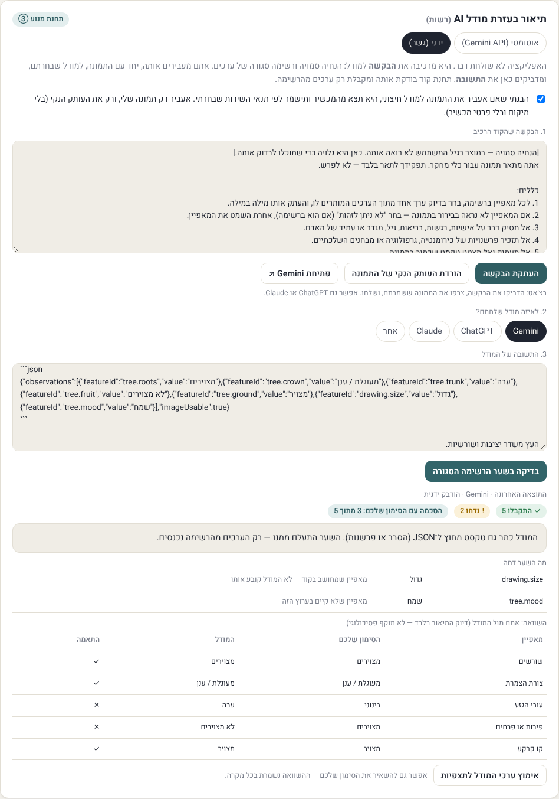
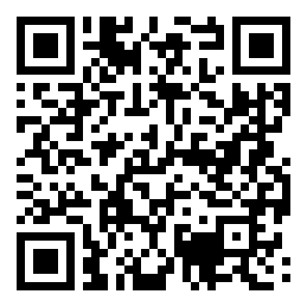
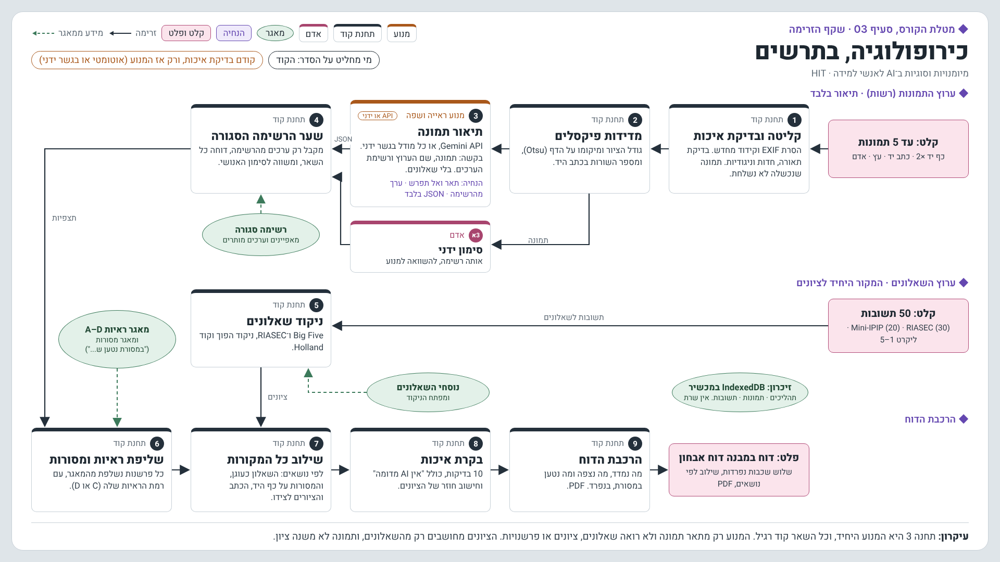
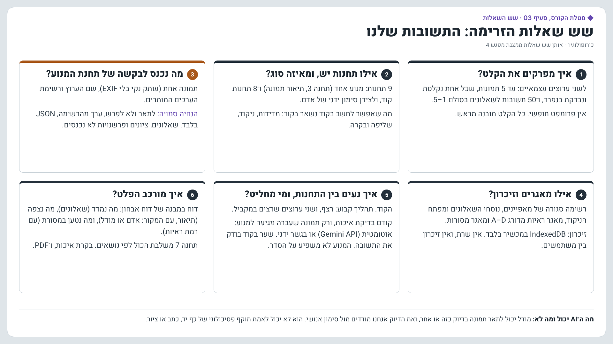

Big Five ו־RIASEC, מתוך השאלונים בלבד. המקור היחיד לציונים.
תיאור התמונה מרשימה סגורה, ועל כל ערך כתוב מי תיאר: אדם או מודל.
"במסורת נטען ש...", תמיד עם רמת הראיות. לא ממצא עליכם.




למי: מי שמלמד אוריינות AI, מנחי סדנאות על הערכה ואבחון, חוקרים של הסכמה בין מודל לאדם.
איזו בעיה: אפליקציות "קריאה" מציגות פרשנות כאילו היא ממצא. כאן רואים בנפרד מה נמדד, מה נצפה ומה רק נטען.
מה זה משנה: דפוס עיצוב אחר: המודל מתאר, הקוד בודק, והציונים מגיעים רק ממה שנחקר.
השער דחה:
הסכמה: מ־ עד מתוך